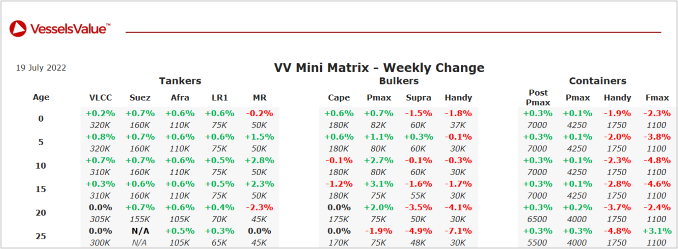

inWeekly Vessel Valuations Report19/07/2022

Bulkers:Handysize values have softened
Panamax Theresa Shandong (82,000 DWT, May 2012, Jiangsu Eastern) sold to unknown Greek buyers for USD 22.00 mil, VV Value USD 19.54 mil – SS Due.
Panamax Fortune Union (73,700 DWT, Nov 1998, Sumitomo) sold to undisclosed buyers for USD 8.50 mil, VV Value USD 10.70 mil.
Ultramax Soho Mandate (61,000 DWT, Jul 2016, Dalian COSCO KHI) sold to unknown Chinese buyers for USD 31.00 mil, VV Value USD 29.00 mil.
Supramax Neutrino (58,600 DWT, Oct 2012, Kawasaki) sold to HTK Shipping & Import Export for USD 24.00 mil, VV Value USD 24.12 mil – SS Due.
Supramax Shun Xin (56,900 DWT, Jan 2010, COSCO Zhoushan) sold to undisclosed buyers for USD 16.90 mil, VV Value USD 17.19 mil – BWTS Fitted.
Supramax Oreo (55,400 DWT, Mar 2008, Kawasaki) sold to Blue Fleet Group for USD 19.35 mil, VV Value USD 18.56 mil – BWTS Fitted.
Handy BC Yangtze Spirit (35,200 DWT, Jan 2012, Dongzhe) sold to undisclosed buyers for USD 18.80 mil, VV Value USD 17.55 mil – SS Passed.
Handy BC Jun De (34,400 DWT, Nov 2011, SPP) sold to unknown Chinese buyers for USD 17.00 mil, VV Value USD 18.43 mil – Prompt Dely.
Tankers:Tanker values have firmed
Aframax Elandra Angel (115,900 DWT, Feb 2009, Samsung) sold to unknown Chinese buyers for USD 33.00 mil, VV Value USD 30.22 mil – DD Passed.
MR2 Sunny Bay (50,700 DWT, May 2008, SPP) sold to unknown Chinese buyers for USD 17.80 mil, VV Value USD 16.96 mil.
MR2 Neutron Sonic (50,100 DWT, Sep 2007, SPP) sold to undisclosed buyers for USD 14.00 mil, VV Value USD 15.66 mil – SS Due.
MR1 (Chem / Product) Seaexplorer (40,000 DWT, Jan 2003, Hyundai Mipo) sold to Beks Shipmanagement and Trading SA for USD 9.00 mil, VV Value USD 8.19 mil – SS Due.
Containers:Handysize and Feedermax values have softened
Handy Container A Roku (1,708 TEU, Aug 2008, Imabari) sold to Hai An Transport & Stevedoring for USD 30.00 mil, VV Value USD 33.85 mil – SS Passed.
